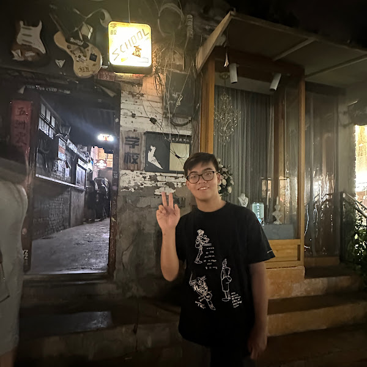

I'm Hongshuo Zhu
Welcome to my blog
I’m an undergraduate student at the University of Maryland, College Park. I’m interested in coding, fitness, and exploring creative projects in my free time.
This site is where I document my journey — including class notes, personal projects, and occasional thoughts on anime, projects, and learning.